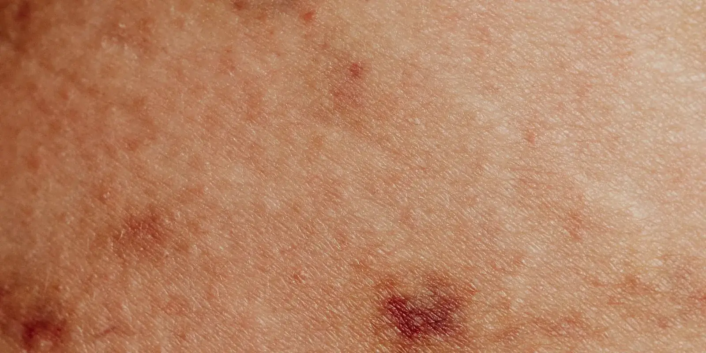

Tabaco y circulación: qué relación existe con tus piernas
El tabaco y el alcohol le pasan factura al corazón, sí, pero también a la circulación de tus piernas: la nicotina contrae los vasos y el alcohol hincha los tobillos. Te contamos qué le hace cada uno a tus piernas y qué puedes hacer para cuidarlas.

¿Te fumas uno que otro cigarrillo cuando sales, o te tomas unas cervezas el fin de semana, y te preguntas si eso realmente le hace algo a esas piernas que ya sientes pesadas o hinchadas? Sí les hace algo: tabaco y circulación están más conectados de lo que crees, y no hace falta fumar un paquete diario para que tus arterias y venas lo noten. Con el alcohol pasa algo parecido: no causa várices por sí solo, pero sí les complica la vida a tus piernas.
Tabaco y circulación: qué le hace la nicotina a tus vasos sanguíneos
La nicotina hace que las arterias se contraigan y se vuelvan más angostas, lo que reduce el flujo de sangre hacia las piernas. Menos flujo, más esfuerzo para tus piernas. Con los años, esto acelera la acumulación de placa en las paredes arteriales y aumenta el riesgo de enfermedad arterial periférica: arterias de las piernas más estrechas que restringen la circulación y que pueden doler al caminar. Dentro de los problemas de salud vascular, fumar es uno de los factores de riesgo modificables con más peso.
Las arterias no son las únicas que sufren. El tabaco también se ha relacionado con la insuficiencia venosa: un estudio de casos y controles encontró que quienes fuman entre 10 y 19 cigarrillos al día tienen cerca de 1,7 veces más riesgo de insuficiencia venosa en las piernas, y quienes fuman 20 o más, cerca de 2,4 veces más. La explicación probable es que la nicotina mantiene los vasos contraídos de forma sostenida, lo que estresa las paredes de las venas y les resta elasticidad con el tiempo.
Alcohol y venas: por qué la hinchazón empeora
El alcohol actúa distinto. Al principio dilata los vasos sanguíneos, sobre todo los de la piel, por eso sientes esa sensación de calor después de una copa. Esa dilatación deja que salga más líquido de los capilares hacia el tejido, y sumado a que el cuerpo retiene sodio, es una de las razones por las que amaneces con los pies o los tobillos más hinchados después de una noche de tragos.
Aunque el alcohol no es la causa directa de tus várices, si ya las tienes, puede hacer que la hinchazón, el cansancio y la pesadez se sientan peor. Tomarlo en exceso y de forma sostenida también deshidrata y espesa la sangre, lo que le exige más esfuerzo al sistema venoso para hacerla circular de vuelta desde las piernas.
Cuando el cigarrillo y el trago van juntos
Aquí en Medellín, entre el after office del jueves y la parrillada del fin de semana, el cigarrillo y el trago suelen ir de la mano. Eso hace difícil separar el efecto de uno del otro, pero juntos le suman una carga extra a un sistema venoso y arterial que, si ya tienes várices o antecedentes familiares, puede venir exigido desde antes.
Dejar de fumar no hace que desaparezcan las várices que ya tienes, pero sí puede frenar que la circulación siga empeorando. Es un cambio que vale la pena, aunque no sea la solución completa a la pesadez o la hinchazón.
Ni el cigarrillo ni el trago son la única causa de tus várices o tu hinchazón, pero los dos le suman trabajo a un sistema venoso que quizás ya viene exigido.
Qué puedes hacer, empezando hoy
Dos cambios sencillos, con beneficio real para tu circulación:
- Si fumas: habla con tu médico sobre un plan para dejarlo. Es el paso que más impacto tiene en tu circulación a mediano plazo.
- Si tomas alcohol: modera la frecuencia y la cantidad, e hidrátate bien cuando lo haces, para que tus piernas no amanezcan tan hinchadas.
Estos cambios se suman a otros hábitos que también ayudan a tu circulación, sobre todo si además pasas muchas horas sentada: puedes revisar Sedentarismo y venas: qué le pasa a tus piernas y 7 hábitos para mejorar la circulación de piernas para completar el panorama.
Si notas que la pesadez, la hinchazón o las várices no mejoran pese a estos cambios, vale la pena una valoración de tu salud vascular con eco doppler. Puedes agendar una valoración con nuestro equipo para revisar cómo están tus venas y arterias hoy, no cuando el dolor te obligue a hacerlo.
Preguntas frecuentes
¿Fumar realmente afecta la circulación de las piernas?
Sí. La nicotina hace que las arterias y las venas se contraigan, lo que reduce el flujo de sangre. Con el tiempo, esto se ha relacionado con la enfermedad arterial periférica y con un mayor riesgo de insuficiencia venosa en las piernas.
¿Si dejo de fumar, mi circulación puede mejorar?
En muchos casos sí. Dejar de fumar ayuda a que los vasos sanguíneos se relajen y a que la circulación mejore de forma progresiva, con beneficios más notorios después de varios meses o años sin fumar. Lo que ya está dañado, como unas várices existentes, no desaparece solo por dejar el cigarrillo, pero sí se frena que la situación empeore.
¿El alcohol causa várices o solo empeora la hinchazón?
El alcohol no es una causa directa de las várices, pero si ya las tienes, puede hacer que la hinchazón, la pesadez y el cansancio en las piernas se sientan más fuertes, sobre todo al día siguiente de tomar en exceso.
¿Tomar alcohol de vez en cuando también afecta mis venas?
Un consumo ocasional y moderado no suele traer las mismas consecuencias que un consumo frecuente o excesivo. Aun así, si notas que después de tomar amaneces con las piernas más hinchadas o pesadas, es una señal de que tus venas ya vienen exigidas y conviene revisarlas.